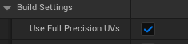
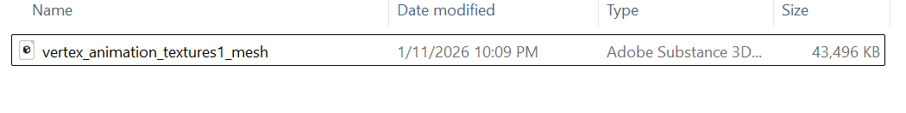

← 部落格 × Special Project | PART1
首先，我用 Yichen 的蕨类模型测试 VAT 流程。不过由于面数很高（205,975 个多边形）、动画又很长（240 格），贴图输出经常失败。

所以我决定降低面数，并尝试把动画分段输出：先输出第 1–100 格，再输出第 101–240 格。结果遇到问题，动画看起来会抖动，后来我找到一个非常有用的 VAT 除错方法。


第 1 周
VAT 与 USD 流程测试
1 月 9 日
VAT：
首先，我用 Yichen 的蕨类模型测试 VAT 流程。不过由于面数很高（205,975 个多边形）、动画又很长（240 格），贴图输出经常失败。
我在 Houdini 社群找到一位艺术家提出的公式，用来判断最适合算图的 primitive 数量与影格数。
VAT 每种贴图尺寸的点数上限？影格范围上限？
结论是：把影格数乘以点数再除以贴图尺寸 (frame_count*point_count)/texture_size，只要结果低于 9000 似乎就能顺利完成。不过这是我靠反复试错摸索出来的。
连结：https://www.sidefx.com/forum/topic/85129/?page=1#post-368221
所以我决定降低面数，并尝试把动画分段输出：先输出第 1–100 格，再输出第 101–240 格。结果遇到问题，动画看起来会抖动，后来我找到一个非常有用的 VAT 除错方法。
连结：https://www.sidefx.com/forum/topic/81422/#post-350761
原因是建置设定改变了。
还需要找出动画闪烁的原因。


USD：
USD 流程方面，我尝试在 Houdini 中建立 USD instancing，发现使用 Packed Primitives 能大幅降低记忆体用量。这里我测试了 15 株蕨类。
大小比较
之前
之后
视觉比较
-
在 Houdini 中尝试 USD instancing
-
在 Unreal 中尝试 USD instancing
-
在 Houdini 和 Unreal 中尝试 VAT instancing